Programación de servicios y procesos
17 diapositivas · 9:50 previstos · Presentacion_PSP_UD2.pdf
Resumen
| Diap. | Tema | Tiempo |
|---|---|---|
| 01 | Portada | 0:15 |
| 02 | Contenido | 0:15 |
| 03 | Hilo y proceso | 0:40 |
| 04 | Ventajas y desafíos | 0:30 |
| 05 | Condición de carrera | 0:50 |
| 06 | Cinco herramientas | 0:35 |
| 07 | Crear hilos | 0:40 |
| 08 | Estados y control | 0:40 |
| 09 | Experimento | 0:40 |
| 10 | synchronized y monitor | 0:45 |
| 11 | wait y notify | 0:40 |
| 12 | Productor-consumidor | 0:45 |
| 13 | Semáforos | 0:30 |
| 14 | java.util.concurrent | 0:25 |
| 15 | Cena de los filósofos | 0:40 |
| 16 | Lectores y escritores | 0:30 |
| 17 | Ideas clave | 0:30 |
| Total | 9:50 |
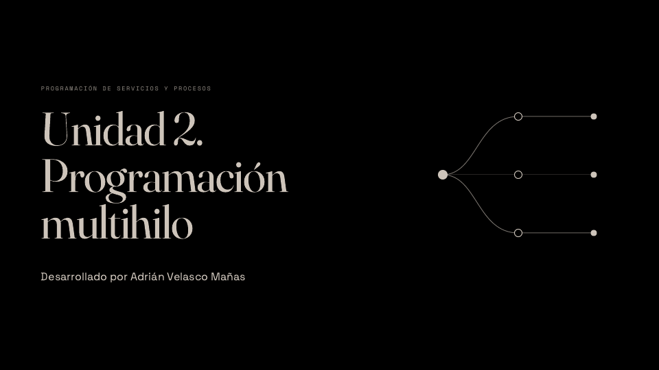
Presentar el tema en una frase: hoy toca ver cómo hace un programa varias cosas a la vez.
Vale, pues la unidad 2 de PSP va de hilos. O sea, cómo hacer que un mismo programa haga varias cosas a la vez y, sobre todo, cómo evitar que esas cosas se pisen entre ellas. Voy a ir de lo más básico a los problemas clásicos.
Dar el mapa: cinco bloques para que el público sepa a dónde vas.
Lo he dividido en cinco partes. Primero qué es un hilo, luego el problema que traen, luego cómo se usan en Java, cómo se sincronizan, y al final tres problemas clásicos que se preguntan siempre. No me detengo aquí, empiezo.
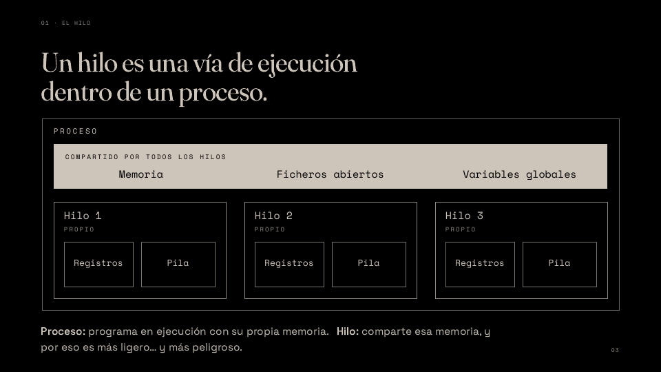
Un hilo vive dentro de un proceso y comparte su memoria. Todo lo demás de la unidad sale de ahí.
Fíjate en el dibujo. El proceso es la caja grande. Arriba, lo que comparten todos los hilos: la memoria, los ficheros abiertos, las variables globales. Y abajo cada hilo tiene lo suyo, que son sus registros y su pila. Un proceso nuevo tendría que copiar todo esto; un hilo no, así que es mucho más barato de crear. Pero ojo, que compartan memoria es justo lo que nos va a dar problemas dentro de nada.
¿Diferencia entre proceso e hilo? El proceso tiene su propio espacio de memoria y recursos. El hilo es una unidad de ejecución dentro de un proceso y comparte esos recursos con los demás hilos del mismo proceso.
¿Qué no se comparte? Los registros del procesador y la pila: es donde están las variables locales de cada método en ejecución.
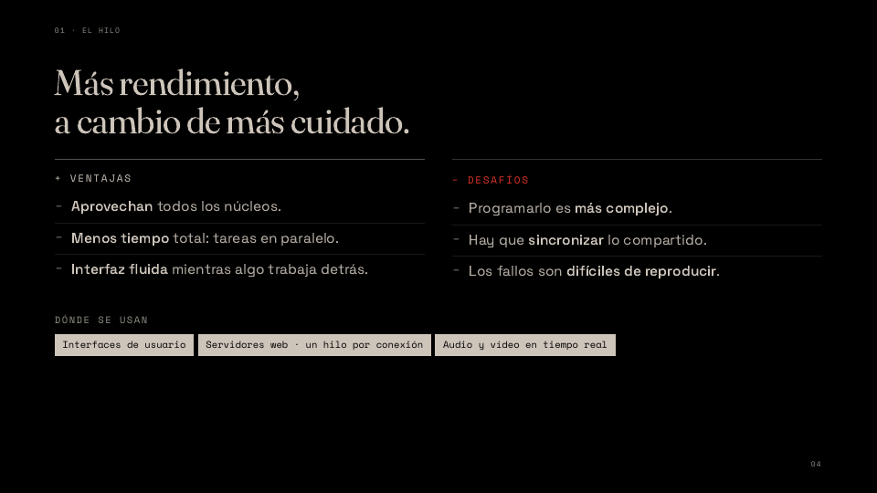
Ser honesto: los hilos mejoran el rendimiento, pero cuestan en complejidad.
¿Para qué los queremos? Pues para aprovechar todos los núcleos del procesador, para tardar menos y para que una aplicación no se quede congelada mientras hace algo pesado. Un servidor web, por ejemplo, usa un hilo por cada conexión. Pero tiene su parte mala: programarlo es más difícil y los errores son muy raros de reproducir. Ahora te enseño uno.
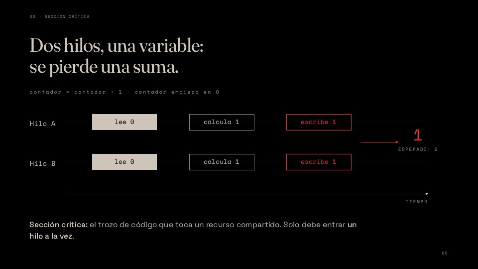
Entender por qué dos hilos sobre la misma variable pierden una actualización. Es la diapositiva más importante.
Mira, el contador empieza en cero y cada hilo le suma uno. Lo esperable es que acabe en dos. Pero sumar uno no es un paso, son tres: leer el valor, calcular el nuevo y escribirlo. Si el hilo A lee cero y justo antes de que escriba el hilo B también lee cero, los dos calculan uno y los dos escriben uno. Resultado: uno en vez de dos. Se ha perdido una suma. Eso es una condición de carrera, y el trozo de código donde pasa se llama sección crítica. La regla es que ahí dentro solo entre un hilo a la vez.
¿Qué es una condición de carrera? Que el resultado depende del orden en que se ejecutan los hilos. Aquí, dos hilos leen el mismo valor antes de que el otro lo actualice.
¿Qué es una sección crítica? El trozo de código que accede o modifica un recurso compartido y que no debe ejecutarse a la vez por varios hilos.
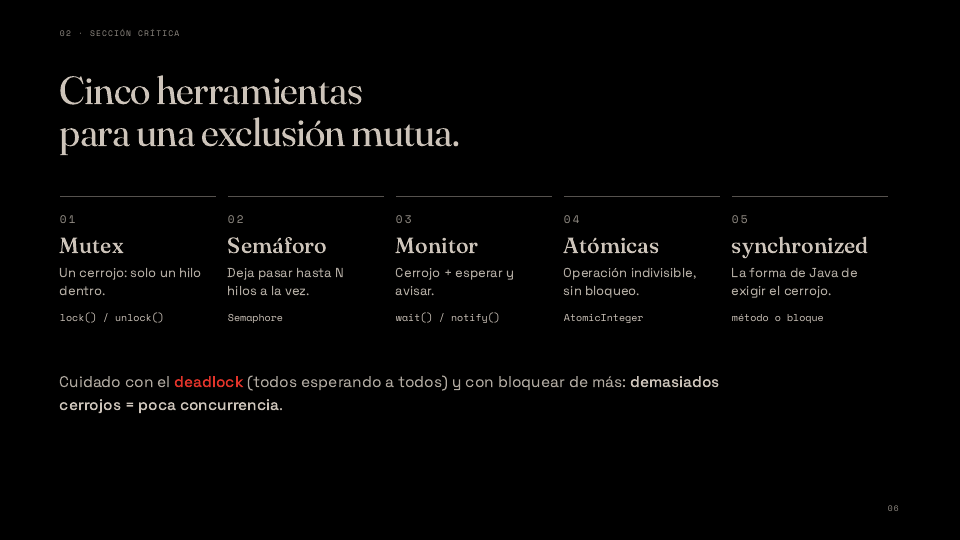
Ver el panorama de soluciones sin entrar en detalle; cada una vuelve luego.
Para resolverlo hay cinco herramientas. Un mutex es un cerrojo: solo entra uno. Un semáforo es parecido pero deja pasar hasta N. El monitor mezcla un cerrojo con la posibilidad de esperar y avisar. Las variables atómicas hacen la operación de golpe, sin bloqueo. Y synchronized es como Java te da el cerrojo. Todas tienen un riesgo: si bloqueas de menos hay carreras, si bloqueas de más pierdes rendimiento, y si se bloquean entre ellas tienes un deadlock.
¿Qué es un deadlock? Dos o más hilos esperando indefinidamente por recursos que otro tiene y nunca soltará.
¿Diferencia entre mutex y semáforo? El mutex deja entrar a uno. El semáforo de conteo deja entrar hasta N. Un semáforo con un solo permiso se comporta como un mutex.
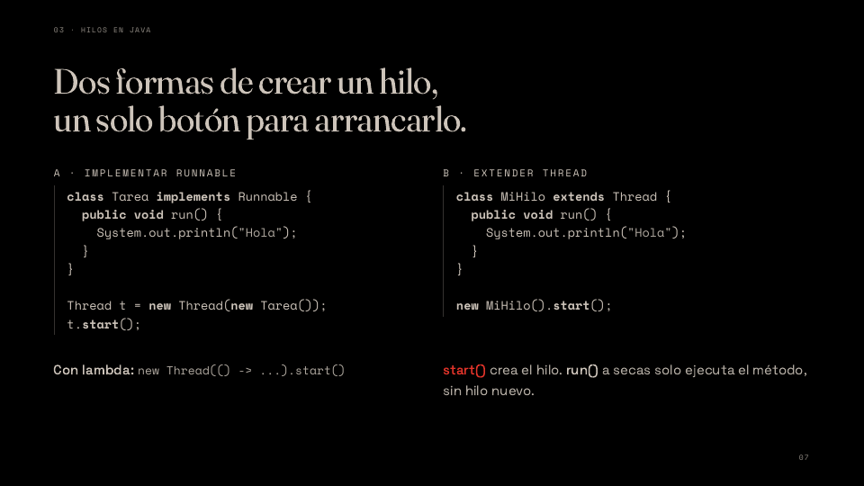
Que quede claro que hay dos formas y que lo que arranca el hilo es start().
En Java hay dos formas. La primera es implementar Runnable: escribes el método run con lo que quieras hacer y se lo pasas a un Thread. La segunda es heredar de Thread y sobrescribir run. Y con lambda queda en una línea. Lo importante: lo que lanza el hilo es start. Si llamas a run directamente, se ejecuta como cualquier método, en el mismo hilo, y no has hecho nada concurrente.
¿Cuál es mejor, Runnable o Thread? Normalmente Runnable, porque Java solo permite heredar de una clase y así la tuya queda libre. Es una recomendación general, el temario enseña las dos.
¿Qué pasa si llamo a run() en vez de start()? Se ejecuta en el hilo actual, como una llamada normal. No hay hilo nuevo.
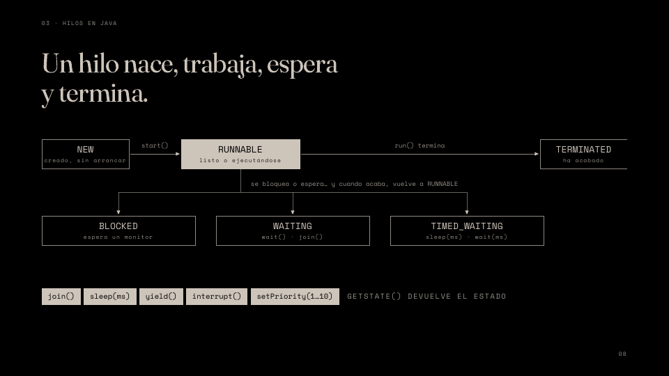
Seguir la vida de un hilo y nombrar los métodos para controlarlo.
Un hilo nace en NEW. Cuando haces start pasa a RUNNABLE, que es listo o ejecutándose. Desde ahí puede bloquearse esperando un monitor, esperar a que otro hilo haga algo con wait o join, o dormir un tiempo con sleep. Cuando termina el run, queda en TERMINATED. Y para controlarlo tienes join, que espera a que otro acabe, sleep, yield, interrupt y la prioridad, que va de uno a diez.
¿Para qué sirve join()? Para que un hilo, normalmente el principal, espere a que otro termine antes de seguir.
¿Qué hace interrupt()? Pide que el hilo se interrumpa. Si está en sleep o wait, salta InterruptedException; si no, el hilo puede comprobarlo con isInterrupted().
¿La prioridad garantiza el orden? No del todo. Es una indicación para el planificador: valores del 1 al 10, y con la misma prioridad se alternan (round robin). No conviene basar la corrección del programa en ella.
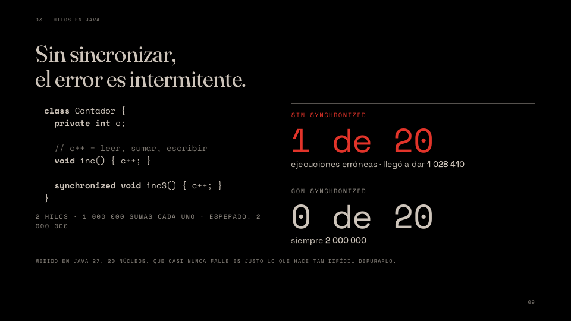
Demostrar que no es teoría: lo medí. Y que el error es intermitente, que es lo que lo hace peligroso.
Esto lo he probado yo. Dos hilos, cada uno suma un millón de veces. Debería salir dos millones. Sin synchronized lo repetí veinte veces y en una salió mal: un millón y pico. En las otras diecinueve salió bien. Y eso es lo malo, que casi siempre funciona y un día falla. Con synchronized, veinte de veinte bien. Así que un programa concurrente que parece que va bien no demuestra nada.
¿Por qué falla solo a veces? Porque depende de cómo se intercalen los hilos en cada ejecución. Si no coinciden justo en la zona crítica, el resultado sale bien.
¿Has dicho que salió mal 1 de 20, eso es siempre así? No: es lo que medí en mi equipo. En otro equipo o con otra carga puede variar. Lo importante es que no es 0 y que con synchronized sí fue 0.
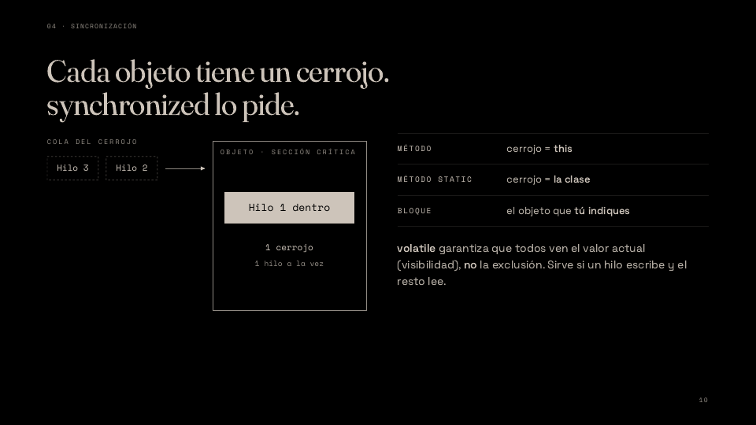
Explicar el cerrojo del objeto y las tres formas de usar synchronized; despachar volatile en una frase.
En Java cada objeto tiene un cerrojo. Cuando un hilo entra en algo synchronized, coge ese cerrojo, y los demás se quedan esperando en la cola hasta que salga. Se puede poner en un método, y entonces el cerrojo es el propio objeto, en un método static, y el cerrojo es la clase, o en un bloque, donde tú dices qué objeto. Y una cosa que se confunde: volatile no es lo mismo. Volatile solo asegura que todos los hilos ven el valor más reciente, pero no impide que dos hilos entren a la vez.
¿Diferencia entre synchronized y volatile? synchronized da exclusión mutua y visibilidad. volatile solo visibilidad: no evita las condiciones de carrera en operaciones como contador++.
¿Qué pasa con dos métodos synchronized del mismo objeto? Comparten el mismo cerrojo, así que un hilo no puede estar en uno mientras otro está en el otro.
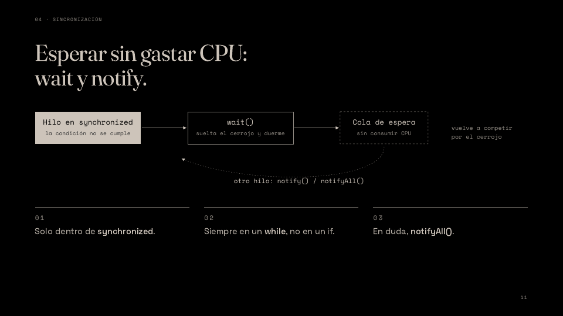
Mostrar cómo esperar a que se cumpla una condición sin gastar CPU.
A veces un hilo no puede seguir hasta que algo cambie, por ejemplo, que haya un dato. Para eso está wait: el hilo suelta el cerrojo y se duerme sin gastar procesador. Cuando otro hilo cambia el estado, llama a notify o notifyAll y el que dormía se despierta, pero tiene que volver a coger el cerrojo. Tres reglas: solo dentro de synchronized, siempre dentro de un while y, si tienes dudas, notifyAll.
¿Por qué while y no if? Porque al despertar hay que volver a comprobar la condición: puede haber cambiado entre el aviso y el momento en que el hilo recupera el cerrojo. (Es una buena práctica general; el temario usa while en sus ejemplos.)
¿Diferencia entre sleep y wait? sleep pausa un tiempo y no suelta el cerrojo. wait suelta el cerrojo y espera a que otro hilo avise.
¿notify o notifyAll? notify despierta a uno cualquiera; notifyAll a todos. Con varios hilos esperando condiciones distintas, notifyAll es lo seguro.
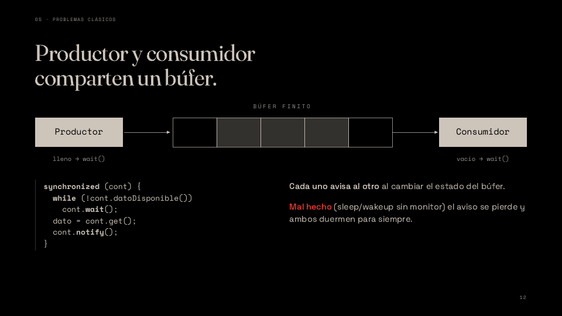
Usar wait/notify en un caso real y explicar cómo se rompe si se hace mal.
Este es el ejemplo típico. Un productor mete datos en un búfer y un consumidor los saca. Si el búfer está lleno, el productor espera; si está vacío, espera el consumidor. Cada uno avisa al otro cuando cambia algo. Y el código es justo lo de antes: dentro de un synchronized, un while con la condición, un wait, y al terminar un notify. Si lo haces mal, sin monitor, puede pasar que el consumidor vea el búfer vacío, el productor meta un dato y avise justo antes de que el consumidor se duerma. Ese aviso se pierde, el consumidor duerme para siempre, el productor llena el búfer y también se duerme. Deadlock.
¿Qué es el aviso perdido? Un wakeup enviado a un hilo que todavía no estaba dormido. Se pierde, y luego ese hilo se duerme sin que nadie lo despierte. Con un monitor no ocurre porque comprobar la condición y dormirse es atómico respecto al cerrojo.
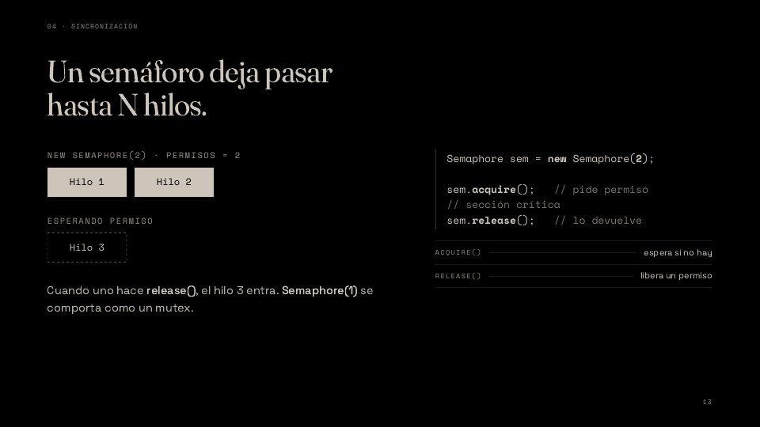
Mostrar el semáforo como un contador de permisos.
Un semáforo es un contador de permisos. Aquí creo uno con dos. El hilo uno y el dos hacen acquire y entran. El tres hace acquire y se queda esperando hasta que alguno haga release. Si lo creas con un solo permiso, funciona como un cerrojo normal.
¿Cuándo usar un semáforo y no synchronized? Cuando quieres limitar a N el acceso simultáneo a algo, por ejemplo N conexiones o N impresoras. synchronized solo deja uno.
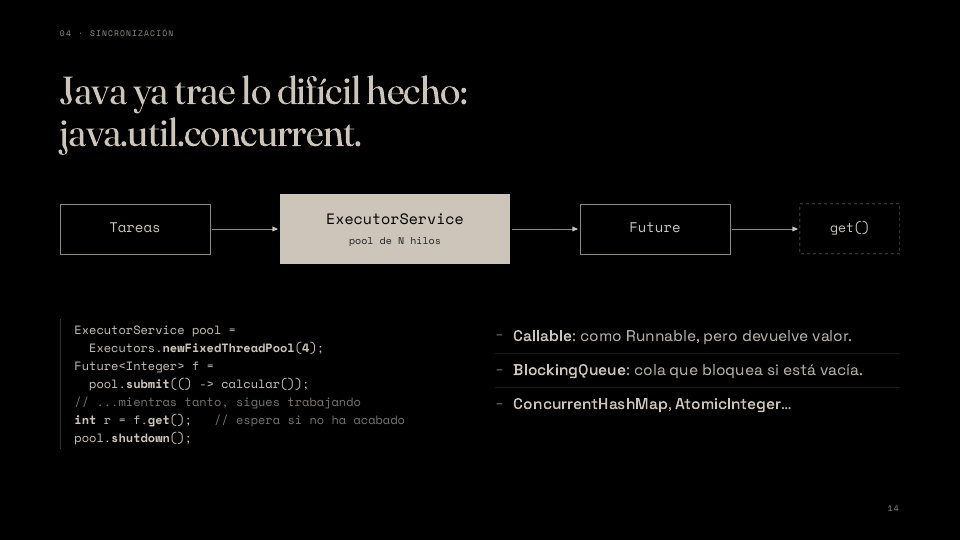
Decir que en el día a día no se hace todo a mano: Java trae herramientas ya hechas.
Todo lo anterior se puede hacer a mano, pero Java ya trae cosas hechas. Un ExecutorService es un pool de hilos: le mandas tareas y él las reparte con un número limitado de hilos. Si la tarea devuelve algo, usas Callable, y lo que recibes es un Future. Sigues haciendo cosas y cuando necesitas el resultado llamas a get, que espera solo si todavía no ha terminado.
¿Runnable o Callable? Runnable no devuelve nada. Callable devuelve un valor con call() y puede lanzar excepciones.
¿Por qué un pool y no crear hilos cada vez? Porque limita cuántos hilos hay a la vez y los reutiliza; crear hilos sin límite gasta recursos.
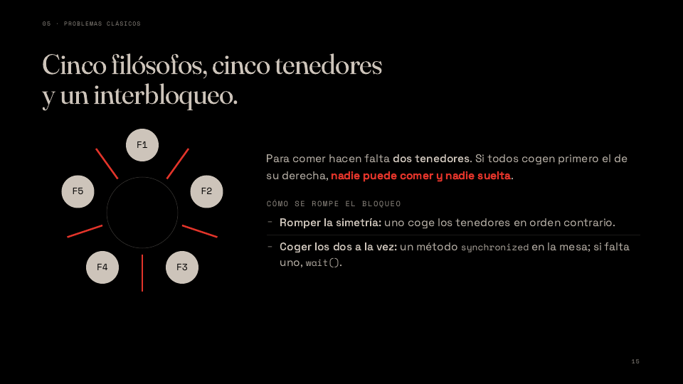
Mostrar un deadlock de verdad y las dos formas de romperlo.
Cinco filósofos en una mesa y cinco tenedores. Para comer necesitan dos. Si cada uno coge el de su derecha a la vez, todos se quedan con un tenedor esperando el otro, y nadie lo va a soltar. Eso es un deadlock. Hay dos formas de arreglarlo. Una, romper la simetría: que uno de ellos coja primero el otro tenedor. Dos, hacer que coger los dos tenedores sea una sola operación protegida, y si falta uno, esperas con wait y no te quedas con ninguno.
¿Por qué se produce el deadlock? Cada filósofo sostiene un recurso y espera otro que tiene su vecino, formando una espera circular.
¿Cómo se evita? Rompiendo la simetría del orden de adquisición o adquiriendo los dos recursos de forma atómica, como en la solución de la Mesa.
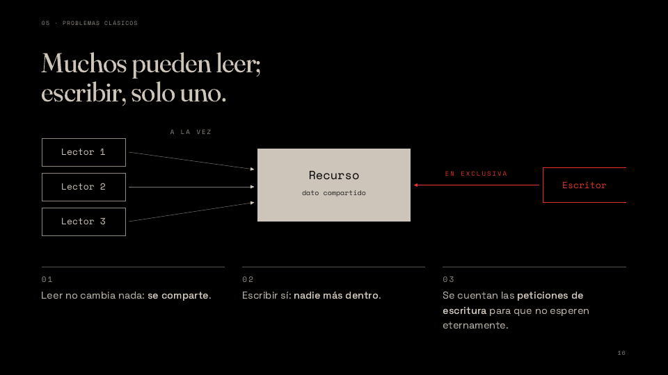
Explicar la regla: leer se comparte, escribir es exclusivo.
Último clásico. Varios hilos leen y alguno escribe. Leer no modifica nada, así que muchos lectores pueden ir a la vez. Escribir sí cambia el dato, así que el escritor tiene que estar solo. Y la solución del temario cuenta las peticiones de escritura pendientes, para que si llegan lectores nuevos, no dejen al escritor esperando para siempre.
¿Qué problema hay si solo se favorece a los lectores? Que si siempre llegan lectores, el escritor nunca entra: inanición. Por eso se tienen en cuenta las peticiones de escritura.
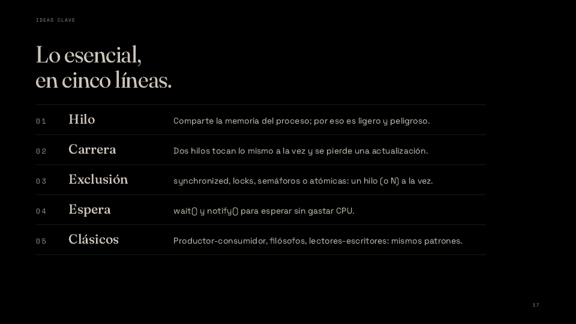
Cerrar con cinco ideas y dejar la puerta abierta a preguntas.
Para acabar, cinco ideas. Un hilo comparte la memoria del proceso, por eso es ligero pero peligroso. Cuando dos tocan lo mismo hay una condición de carrera. Se evita con exclusión mutua: synchronized, locks, semáforos o atómicas. Para esperar sin gastar procesador, wait y notify. Y los problemas clásicos son siempre el mismo patrón con otra cara. Eso es todo, si tenéis preguntas, adelante.
Anexo
¿Diferencia entre concurrencia y paralelismo? Concurrencia: varias tareas progresando en un mismo intervalo, aunque sea en un solo núcleo. Paralelismo: varias ejecutándose realmente a la vez en varios núcleos.
¿Se puede evitar el deadlock? Sí: evitando la espera circular (orden fijo de adquisición), cogiendo todos los recursos a la vez o limitando cuántos hilos compiten.